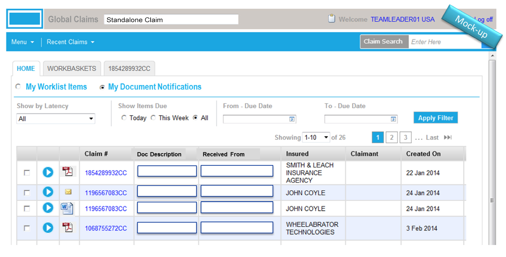
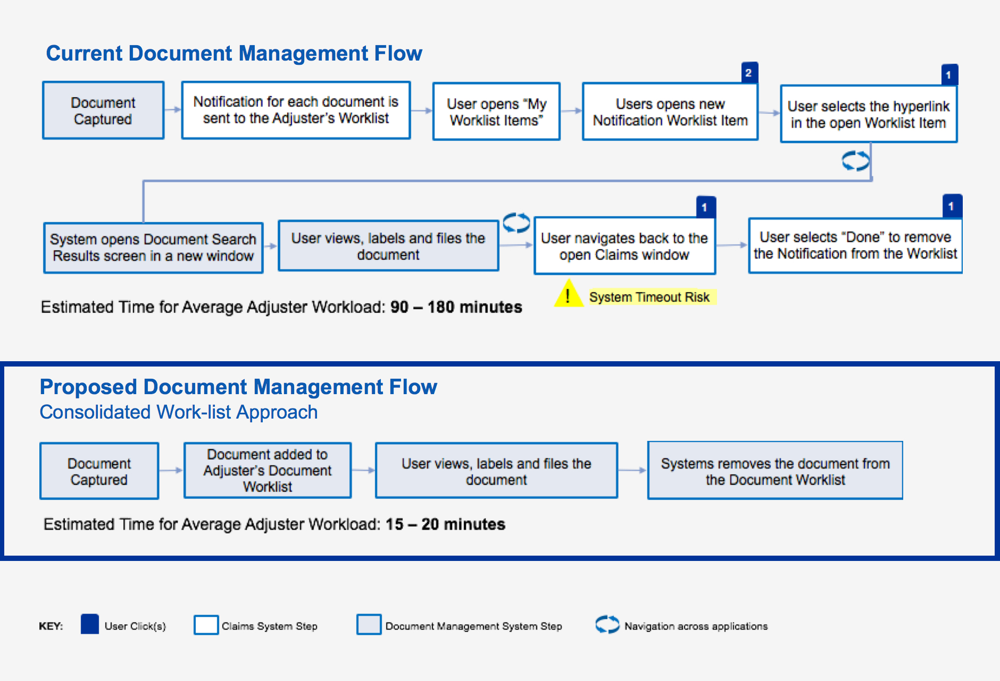

Insurance Claims System Design
The client was a large global insurance provider with a presence in over 100 countries. The insurer was undergoing a large scale claims system transformation to bring all claims processing onto a single, global platform. I served as a member of the implementation team, working directly with the end users and client stakeholders to build a solution that was universal, while still satisfying local regulatory requirements.
-
Role
Business Analyst
-
Deliverables
Governance Plan, Requirement Documentation, User Flows, Annotated Mockups, Business Case
-
Client
Global Insurance Provider
Discovery
As a member of the claims transformation delivery team, I was responsible for designing and implementing a Global Framework Governance plan. The enabled over 60 team members to continuously build and improve the global system, while maintaining a common core solution.
All modifications and enhancements to the existing system required approval from a governance committee, which I facilitated.
During prioritization discussions with the subject matter experts, we identified a high priority request to improve the process for managing documents across systems. I met with end users, stakeholders and developers to understand the business needs and any technical constraints.

Design
Once the initial requirements were validated, I evaluated the workflow users ran to manage files between the claims system and document management system. I then sketched potential solutions to streamline the existing process.
I proposed 3 options to the client stakeholders by mocking up the user interface to illustrate the potential changes.
-
Consolidated Work-list Approach
-
Editable Work-list Grid
 -
Editable Work-list Item
Following the walkthrough discussion, we selected an approach that would consolidate documents across the two systems. I worked with the subject matter experts to craft the business case for the system improvement.
Solution
We estimated that the proposed solution would save the end user 40-60 minutes to complete a specific task. We also eliminated 5 redundant steps and the need to navigate between systems.
